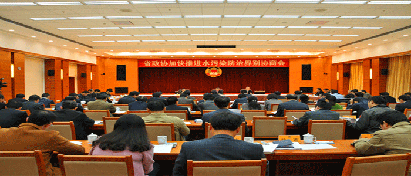

安徽省政协举行加快推进水污染防治界别协商会
10月28日上午，安徽省政协举行加快推进水污染防治界别协商会。安徽省政府副省长周春雨，省政协副主席、省委政法委书记徐立全出席会议并讲话。
10月28日上午，安徽省政协举行加快推进水污染防治界别协商会。安徽省政府副省长周春雨，省政协副主席、省委政法委书记徐立全出席会议并讲话。省政协副主席牛立文主持会议。会上，於忠祥、程晓舫、季学枫、王永定、钱敏、李学良、李庭奇、王琦等安徽省政协委员和杨天标同志围绕推进农业面源污染防治、构建科学水生态循环系统、畜禽养殖污染治理、加大地下水监测、完善创新水污染防治机制、推进水污染防治装备产业发展、健全大别山区水环境生态补偿机制等积极建言。省环保厅、省农委、省水利厅负责同志作了回应发言。。

周春雨指出，各位委员所提的意见和建议，对做好水污染防治工作具有很强的针对性和指导性，各级政府和有关部门要认真研究吸纳。要强化工作责任，研究推行河长制，进一步健全完善水污染防治工作机制。要加大农村面源污染治理力度，持续改善农村人居环境。要强化环保执法监管，严厉查处各类环境违法行为。要完善生态补偿机制，调动上游地区水污染防治工作的积极性。要强化工作调度，严格考核问责，确保全面完成水污染防治各项任务。徐立全在讲话中指出，加快推进水污染防治是贯彻习近平总书记系列重要讲话精神和视察安徽重要讲话、落实绿色发展理念的具体行动，是建设健康中国和绿色江淮美好家园的重要举措,围绕这一问题开展协商议政，是人民政协义不容辞的责任。政协组织和政协委员要持续关注、跟踪助推水污染防治工作，多做宣传引导、扩大影响的工作，更好发挥凝聚共识作用，努力为打造创新型生态强省、建设美好安徽营造良好氛围、作出更大贡献。
水资源介绍